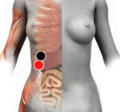

Psicosis
Pares
costohepático - costohepático
páncreas - páncreas
peroné - peroné

Generalidades:
Psicosis, pérdida de contacto con la realidad. La persona puede sufrir delirios o alucinaciones.
Se considera un trastorno psicológico y de la personalidad, pero también puede deberse a la presencia de tóxicos que afectan al hígado o páncreas. Incluso una combinación de factores psicológicos, fisiológicos incluso sofrológicos (ver malignidad)